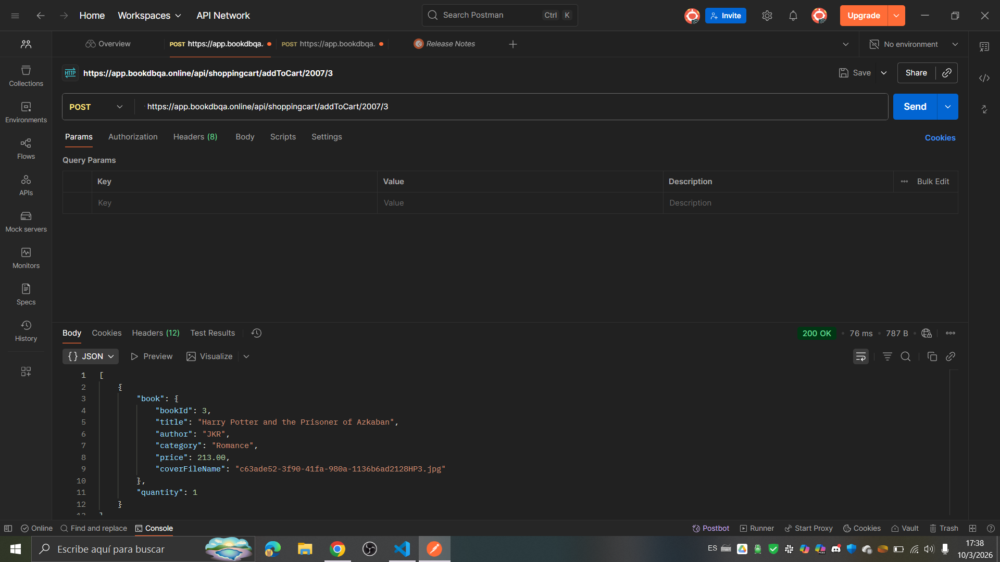
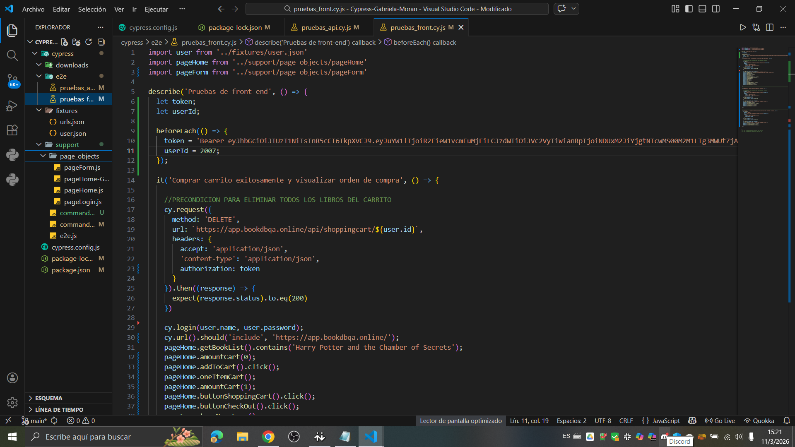

Gabriela Virginia Morán Chans
Analista de Sistemas Junior
Mi camino en el mundo de la tecnología comenzó con una curiosidad profunda por entender cómo funcionan los sistemas que sostienen nuestro día a día. Actualmente, como estudiante de la Tecnicatura en Análisis de Sistemas, he transformado esa curiosidad en una metodología de trabajo: analizar problemas complejos para diseñar soluciones eficientes y escalables. A lo largo de mi formación, he pasado de la lógica pura y el modelado de datos a la implementación real de interfaces. Mi enfoque no es solo escribir código, sino comprender el flujo de la información y la experiencia del usuario. Este portfolio es el resultado de ese proceso: una combinación de rigor analítico y desarrollo constante, donde cada proyecto refleja un nuevo desafío superado y una herramienta técnica dominada
ContactameExperiencia Laboral
Implementadora de Sistemas.
Empresa: DGSISAN - Dirección General de Sistemas Sanitarios.
- Capacitación a personal médico y administrativo de hospitales públicos.
- Organización y control de información administrativa en Excel.
- Elaboración, revisión de documentación y guía de uso.
- Resolución de consultas y soporte a usuarios.
- Coordinación con distintas áreas para asegurar la correcta gestión de información.
Atención al Cliente / Call Center.
Empresa: MyP Producciones Marketing S.R.L
- Gestión de consultas administrativas y seguimiento de solicitudes.
- Registro y actualización de datos en sistemas de gestión (CRM).
- Organización de información y priorización de casos.
- Comunicación con distintas áreas para resolución de incidencias.
Proyectos Personales

Practicas en Postman
En la Tecnicatura de Analisis de Sistemas, tuvimos la materia "Desarrollo e implementación de pruebas de software", en la cual estuve trabajando en testing de APIs utilizando Postman. En este ejercicio realicé pruebas sobre distintos endpoints de una aplicación web para validar el funcionamiento del carrito de compras y la interacción con el backend. Algunas de las pruebas realizadas fueron:
- Envió de requests POST para agregar productos al carrito.
- Validación de repuestas HTTP 200 OK.
- Verificación de la estructura del JSON de respuesta.
- Comprobación de datos devueltos por la API (id del libro, título, precio, categoría, cantidad, etc.)
- Simulación de acciones reales de usuarios a travéz de endpoints HTTP (GET / POST / DELETE).

Practicas en Cypress
También en la materia "Desarrollo e implementación de pruebas de software" aprendimos a utilizar Cypress para realizar pruebas de automatización. escribiendo el código en Visual Studio Code, en lenguaje JavaScript, asi tabién utilizando E2E para verificar que el código corra correctamente. Los casos de prueba los teniamos que elegir nosotros, escribirlos en Jira, eh ir haciendo el paso a paso. Yo particularmente realice los siguente:
- Agregar un libro al carrito de compras y validar que se genere correctamente la orden de compra.
- Agregar un libro a favoritos, navegando por categorías, seleccionarlo y luego eliminarlo.
- Limpiar el carrito y verificar sus cambios.